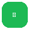

Sync Music
YouTube → Spotify Connect
Spotify desconectado
🎵
Pronto
Aguardando música...
Abra o YouTube ou selecione uma faixa
Modo Automático
OFF
Troca no Spotify/Alexas assim que mudar no YouTube
DISPOSITIVOS SPOTIFY CONNECT
Buscando dispositivos...
Volume (Tudo)
50%
⚙ Configurações & Diagnóstico ▾
Debug Mode
Exibe dados internos e estado do handoff
📡 Telemetria do Sistema
Nenhum evento registrado ainda.